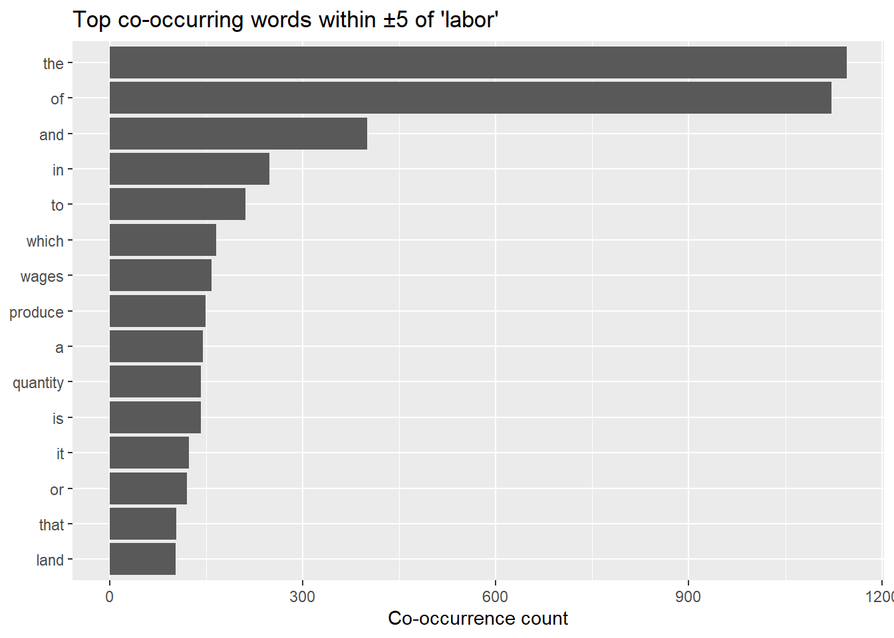
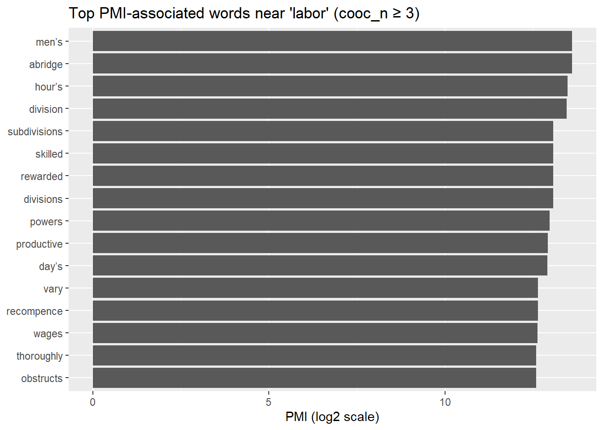

library(dplyr)
library(tidyr)
library(stringr)
library(tidytext)
library(tibble)
library(readr)
library(tidyr)
library(tidyverse)
library(ggplot2)Week 06: Co-occurrence, PMI, and moving towards Word2Vec
Windows, Co-occurrence, and PMI
So far, we have been focusing on counting words and other features as a way to represent texts and to compare them to each other. What about modeling meaning? The basic intuition that we are going to work with is that we can learn a lot about the meaning of words by looking at their relational properties. That is:
a word’s meaning is constrained by its neighbors (“bank account” vs. “river bank”)
meaning emerges from patterns of use
Later on in the semester, we will discuss the limitations of this approach (which some of you have already touched on in class by asking about sarcasm and irony, but there are objections derived from ordinary language philosophy that we need to address), but first we need to learn how to implement this intuition about meaning and to extract as much as we can from it!
Today’s tutorial is preparing you for the next core concepts in the class:
Embeddings
Semantics
Word2Vec
BERT-style models
We are going to do this with one of the foundational texts of modern economics, Adam Smith’s Wealth of Nations (1776). By the standards of this course, this is a positively modern text!
You will find the wealth.txt file under files on Canvas.
I. Windows and Co-occurrence
Starting with out intuition that a word’s meaning is constrained by its neighbors, we have to define what we mean by “neighbors.” We are going to work with “windows” as the unit of analysis. The idea is that we place a window of fixed size across tokens and we record which words appear together.
Let’s get started:
and let’s keep the same naming pattern we have developed in the previous tutorials:
raw_text <- read_file("texts/wealth.txt")
texts <- tibble(
doc_title = "wealth.txt",
text = raw_text
)
texts# A tibble: 1 × 2
doc_title text
<chr> <chr>
1 wealth.txt "An Inquiry into the Nature and Causes of the Wealth of Nations\r\…## Bonus tip: another way to read a text that makes it easier to change later in the code:
# file_path <- "wealth.txt"
# raw_text <- read_file(file_path)Great. Now we need to tokenize the text. Because we want to build windows that move through the text in order, we need to preserve token order (so we do not disregard word/token order the way we did in bag of words approaches).
tokens <- texts %>%
unnest_tokens(word, text) %>%
group_by(doc_title) %>%
mutate(token_id = row_number()) %>%
ungroup()
#Let's take a quick look
tokens %>% slice(1:20)# A tibble: 20 × 3
doc_title word token_id
<chr> <chr> <int>
1 wealth.txt an 1
2 wealth.txt inquiry 2
3 wealth.txt into 3
4 wealth.txt the 4
5 wealth.txt nature 5
6 wealth.txt and 6
7 wealth.txt causes 7
8 wealth.txt of 8
9 wealth.txt the 9
10 wealth.txt wealth 10
11 wealth.txt of 11
12 wealth.txt nations 12
13 wealth.txt by 13
14 wealth.txt adam 14
15 wealth.txt smith 15
16 wealth.txt contents 16
17 wealth.txt introduction 17
18 wealth.txt and 18
19 wealth.txt plan 19
20 wealth.txt of 20For this tutorial, we are going to try to get a sense for how Adam Smith discusses the term “labor” (side note: for the sake of simplicity, I normalized “labour” to “labor” before providing the file to you). This means that we are going to consider the token “labor” to be our anchor term and we will create windows around it. Important: a window size of 5 means that we are trying to capture 5 tokens on each side of our anchor.
Selecting an anchor:
anchor <- "labor" #this allows you to change this as needed
window_size <- 5
#check how many anchor words are in the text
tokens %>% filter(word == anchor) %>% count()# A tibble: 1 × 1
n
<int>
1 1011OK, now we know that there are plenty of our anchor tokens, but we also need to know where they are so that we can find the windows around them.
anchor_hits <- tokens %>%
filter(word == anchor) %>%
select(doc_title, anchor_id = token_id) # organize by location of anchor position
#Let's take a look at the tibble
anchor_hits# A tibble: 1,011 × 2
doc_title anchor_id
<chr> <int>
1 wealth.txt 35
2 wealth.txt 61
3 wealth.txt 74
4 wealth.txt 81
5 wealth.txt 114
6 wealth.txt 147
7 wealth.txt 166
8 wealth.txt 230
9 wealth.txt 487
10 wealth.txt 521
# ℹ 1,001 more rowsThe next step is the key to our analysis: we begin by pairing each anchor occurrence with every token in the document so that we can calculate distances between them. Once those distances are known, we filter down to the tokens that lie within a fix window around the anchor. So, let’s build the window table!
Please make sure that you understand the concepts behind the following block of code:
# Each row in `windows` will be ONE token that appears near ONE anchor occurrence.
windows <- anchor_hits %>%
# Join each anchor occurrence to ALL tokens in the same document.
# This is a "many-to-many" join because one anchor hit matches many tokens [remember we had a similar set up last week].
left_join(tokens, by = "doc_title", relationship = "many-to-many") %>%
# Compute how far each token is from the anchor.
# Negative distance = to the LEFT of the anchor; positive = to the RIGHT.
mutate(distance = token_id - anchor_id) %>%
# Keep only tokens within the window size (±5 tokens).
filter(abs(distance) <= window_size) %>%
# Remove the anchor word itself (distance 0) so we only keep context words, which is what we are interested in.
filter(distance != 0) %>%
mutate(
window_id = paste0(doc_title, "_", anchor_id),
anchor_word = anchor
) %>%
# Keep only the columns we need for the next steps.
select(
doc_title,
window_id,
anchor_word,
anchor_id,
token_id,
distance,
word
)
windows %>%
arrange(anchor_id, distance) %>%
slice(1:20)# A tibble: 20 × 7
doc_title window_id anchor_word anchor_id token_id distance word
<chr> <chr> <chr> <int> <int> <int> <chr>
1 wealth.txt wealth.txt_35 labor 35 30 -5 in
2 wealth.txt wealth.txt_35 labor 35 31 -4 the
3 wealth.txt wealth.txt_35 labor 35 32 -3 productive
4 wealth.txt wealth.txt_35 labor 35 33 -2 powers
5 wealth.txt wealth.txt_35 labor 35 34 -1 of
6 wealth.txt wealth.txt_35 labor 35 36 1 and
7 wealth.txt wealth.txt_35 labor 35 37 2 of
8 wealth.txt wealth.txt_35 labor 35 38 3 the
9 wealth.txt wealth.txt_35 labor 35 39 4 order
10 wealth.txt wealth.txt_35 labor 35 40 5 according
11 wealth.txt wealth.txt_61 labor 61 56 -5 i
12 wealth.txt wealth.txt_61 labor 61 57 -4 of
13 wealth.txt wealth.txt_61 labor 61 58 -3 the
14 wealth.txt wealth.txt_61 labor 61 59 -2 division
15 wealth.txt wealth.txt_61 labor 61 60 -1 of
16 wealth.txt wealth.txt_61 labor 61 62 1 chapter
17 wealth.txt wealth.txt_61 labor 61 63 2 ii
18 wealth.txt wealth.txt_61 labor 61 64 3 of
19 wealth.txt wealth.txt_61 labor 61 65 4 the
20 wealth.txt wealth.txt_61 labor 61 66 5 principle Now, each row in windows represents one word that appeared near one specific occurrence of the anchor. Next, we can collapse all the context window rows into a single ranked list by adding them up. This will measure how many times any given word appears within ±5 window_size tokens of the anchor across the whole document.
cooc <- windows %>%
count(word, sort = TRUE, name = "cooc_n")
cooc# A tibble: 1,085 × 2
word cooc_n
<chr> <int>
1 the 1146
2 of 1122
3 and 400
4 in 248
5 to 211
6 which 166
7 wages 158
8 produce 149
9 a 145
10 is 142
# ℹ 1,075 more rowsSo you can view cooc_n as a tally of contextual proximity. Note: cooc_n does not tell you whether a word is important! It just tells you that it appears frequently (or not) near the anchor. At this point of the analysis, you can see that very common words (such as “is,” “the,” and “which”) rise to the top of the list. This is a problem as common words end up dominating even when they tell us little about the anchor–this is expected since we are using raw counts.
You may want to stop me and complain: well, why didn’t you remove stopwords? Wouldn’t that fix this? This is a reasonable complaint and removing stopwords would help but not solve the issue. Removing stopwords can make the co-occurrence list look more meaningful, but you will still have words that are very common in the document itself appear near any anchor word. We have a better way to solve the common word problem for this particular task…
I. PMI
With the raw co-occurrence count we are tracking the words that appear near the anchor most often. What we are going to compute using PMI is the words that appear near the anchor more often than we would expect given how frequently those words occur in the text overall. This makes PMI a better measure of association strength, rather than simple proximity.
Pointwise Mutual Information (PMI) is defined as:
\[ \mathrm{PMI}(w, a) = \log_2 \left( \frac{P(w, a)}{P(w)\,P(a)} \right) \]
where:
\(P(w,a)\) is the probability that the word \(w\) appears in the anchor’s context window
\(P(w)\) is the overall probability of the word \(w\) in the document
\(P(a)\) is the overall probability of the anchor word \(a\) in the document
If PMI is high, the word \(w\) appears near the anchor more often than we would expect by chance, given how frequent each word is overall. Reference if you want a deeper dive into PMI, see Appendix J in Jurafsky and Martin.
First, we compute the overall word frequencies in the document, \(P(w)\) and \(P(a)\):
total_tokens <- nrow(tokens)
word_freq <- tokens %>%
count(word, name = "word_n") %>%
mutate(p_word = word_n / total_tokens)
word_freq# A tibble: 10,228 × 3
word word_n p_word
<chr> <int> <dbl>
1 0 440 0.00115
2 0d 1 0.00000261
3 1 192 0.000502
4 1,000,000 2 0.00000523
5 1,001,171 1 0.00000261
6 1,101,107 1 0.00000261
7 1,200,000 1 0.00000261
8 1,214,583 1 0.00000261
9 1,243,120 1 0.00000261
10 1,245,808 1 0.00000261
# ℹ 10,218 more rowsWe now get anchor frequency and probability:
anchor_stats <- word_freq %>%
filter(word == anchor) %>%
transmute(anchor_n = word_n, p_anchor = p_word)
anchor_stats# A tibble: 1 × 2
anchor_n p_anchor
<int> <dbl>
1 1011 0.00264Gut check: you might (or not) think that these tibbles look weird! At this stage, we are seeing the documents exactly as the computer sees it: a long sequence of tokens. Numbers appear here because Adam Smith uses a lot of numbers (which shouldn’t surprise us!). This gives us a baseline picture of overall frequency, which PMI will later use to decide whether a word’s appearance near the anchor is genuinely informative or merely a byproduct of being common everywhere.
Now we need to compute \(P(w,a)\). We define the sample space as all tokens that appear inside any widow around the anchor word, excluding the anchor tokens themselves. You can think of this as the complete collection of all context words around the anchor in The Wealth of Nations. Then \(P(w,a)\) is the probability that, if we randomly select one token from all the tokens that occur inside anchor windows, that token is the word \(w\).
In practice, this means that we do the following:
We count how many times 𝑤 appears inside anchor windows.
We divide by the total number of tokens across all anchor windows.
The result is \(P(w,a)\).
This definition allows us to treat co-occurrence as a probabilistic event rather than just a raw count.
total_window_tokens <- nrow(windows)
p_w_given_windows <- windows %>%
count(word, name = "cooc_n") %>%
mutate(p_word_in_windows = cooc_n / total_window_tokens)
p_w_given_windows# A tibble: 1,085 × 3
word cooc_n p_word_in_windows
<chr> <int> <dbl>
1 1740 1 0.0000989
2 30 1 0.0000989
3 a 145 0.0143
4 able 3 0.000297
5 about 4 0.000396
6 above 6 0.000593
7 abridge 7 0.000692
8 abridged 1 0.0000989
9 abridges 1 0.0000989
10 absorbed 1 0.0000989
# ℹ 1,075 more rowsThis is effectively P(w| in anchor windows), which is proportional to \(P(w,a)\) for our purposes.
Next, we join baseline frequencies and compute PMI
pmi_tbl <- p_w_given_windows %>%
left_join(word_freq, by = "word") %>%
mutate(
pmi = log2(p_word_in_windows / (p_word * anchor_stats$p_anchor))
) %>%
arrange(desc(pmi))
pmi_tbl# A tibble: 1,085 × 6
word cooc_n p_word_in_windows word_n p_word pmi
<chr> <int> <dbl> <int> <dbl> <dbl>
1 tenfold 2 0.000198 1 0.00000261 14.8
2 abridges 1 0.0000989 1 0.00000261 13.8
3 ayrshire 1 0.0000989 1 0.00000261 13.8
4 carron 1 0.0000989 1 0.00000261 13.8
5 complexly 2 0.000198 2 0.00000523 13.8
6 conceives 1 0.0000989 1 0.00000261 13.8
7 declamation 1 0.0000989 1 0.00000261 13.8
8 differs 1 0.0000989 1 0.00000261 13.8
9 fashioning 1 0.0000989 1 0.00000261 13.8
10 fattened 1 0.0000989 1 0.00000261 13.8
# ℹ 1,075 more rowsThis should start to give us a clearer picture! However, we do have to worry about rare words. PMI can become misleadingly large when cooc_n is very small (e.g., a word appears once in a window). A standard practice is to filter by minimum co-occurrence count.
pmi_tbl_filtered <- pmi_tbl %>%
filter(cooc_n >= 3) %>% # adjust threshold as needed
arrange(desc(pmi))
pmi_tbl_filtered# A tibble: 423 × 6
word cooc_n p_word_in_windows word_n p_word pmi
<chr> <int> <dbl> <int> <dbl> <dbl>
1 abridge 7 0.000692 8 0.0000209 13.6
2 men’s 7 0.000692 8 0.0000209 13.6
3 hour’s 4 0.000396 5 0.0000131 13.5
4 division 51 0.00504 65 0.000170 13.5
5 divisions 3 0.000297 5 0.0000131 13.1
6 rewarded 6 0.000593 10 0.0000261 13.1
7 skilled 3 0.000297 5 0.0000131 13.1
8 subdivisions 3 0.000297 5 0.0000131 13.1
9 powers 19 0.00188 34 0.0000889 13.0
10 productive 95 0.00940 175 0.000457 12.9
# ℹ 413 more rowsTake a minute to compare the first words in pmi_tbl_filtered with pmi_tbl. Which words rise to the top under PMI that did not dominate raw co-occurrence? What kinds of words does PMI “reward” and what kinds does it “punish”?
Finally, we can visually compare raw co-occurrence:
cooc %>%
slice_max(cooc_n, n = 15) %>%
mutate(word = reorder(word, cooc_n)) %>%
ggplot(aes(x = cooc_n, y = word)) +
geom_col() +
labs(
title = str_glue("Top co-occurring words within ±{window_size} of '{anchor}'"),
x = "Co-occurrence count",
y = NULL
)
and top PMI (filtered by by co-occurrence threshold):
pmi_tbl_filtered %>%
slice_max(pmi, n = 15) %>%
mutate(word = reorder(word, pmi)) %>%
ggplot(aes(x = pmi, y = word)) +
geom_col() +
labs(
title = str_glue("Top PMI-associated words near '{anchor}' (cooc_n ≥ 3)"),
x = "PMI (log2 scale)",
y = NULL
)
What does this all mean?
The PMI analysis begins to reveal some interesting aspects how Adam Smith talks about labor. By comparing the raw co-occurrence counts with the PMI scores, we can distinguish between words that merely appear frequently throughout the text and words that have a genuinely strong association with the concept of labor.
Division and organization (“division” - PMI: 13.5, “divisions” - PMI: 13.1, “subdivisions” - PMI: 13.1): The extremely high PMI for “division” confirms something that you might already know about Smith: the concept of “division of labor” is central to his discussion. For Smith, this is a way to understand human cooperation. This fits in nicely with the results for skilled labor (“skilled” - PMI: 13.1): the appearance of “skilled” and phrases related to men’s labor suggests Smith distinguishes between different types of labor and their respective values or capabilities.
Productivity and capacity (“productive” - PMI: 12.9, “powers” - PMI: 13.0): Smith consistently discusses labor in terms of its productive capacity and the powers or capabilities it possesses.
Compensation (“rewarded” - PMI: 13.1, “wages” - appears in raw counts): not a surprising result by any means, but Smith does discuss rewards and wages alongside labor.
If you have read Smith’s Wealth of Nations, this isn’t particularly surprising… but that’s the point of this exercise. PMI is doing quite well at picking up features of interest in a complex, 18th century economic text.
Looking ahead:
Word2Vec will keep the same core intuition (meaning from context), but it will learn dense vectors by predicting words from windows rather than just counting them. While PMI gives us valuable insights into which words are strongly associated with our anchor term, it still relies on explicitly counting co-occurrences within fixed windows. Word2Vec takes this same fundamental intuition, but approaches it from a predictive rather than counting framework. Instead of tallying how often words appear together, Word2Vec trains a neural network to predict context words from anchor words (or vice versa), learning dense vector representations in the process. These vectors capture semantic relationships in a continuous space where similar words cluster together, allowing for operations like analogy reasoning (e.g., “king” - “man” + “woman” ≈ “queen”). This approach compresses the kind of distributional information we’ve been exploring with PMI into compact, efficient representations that can capture nuanced semantic relationships across your entire corpus.
The table below summarizes how co-occurrence and PMI connect conceptually to Word2Vec. Keep this in mind for Week 7.
| Aspect | Co-occurrence / PMI | Word2Vec |
|---|---|---|
| Unit of analysis | Words within fixed context windows | Words within fixed context windows |
| Core operation | Counting occurrences and associations | Predicting words from context (or context from words) |
| Representation | Sparse, count-based tables | Dense, learned vectors |
| Role of frequency | Explicitly corrected (via PMI) | Implicitly downweighted during training |
| What is learned | Association strength between words | Vector representations encoding semantic similarity |
| Semantic intuition | Words are meaningful if they co-occur unexpectedly | Words are meaningful if they help predict similar contexts |